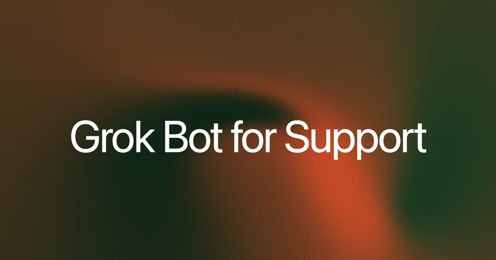
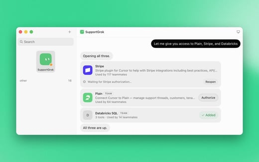
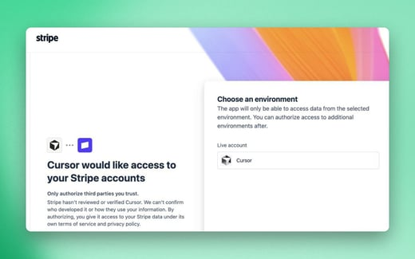
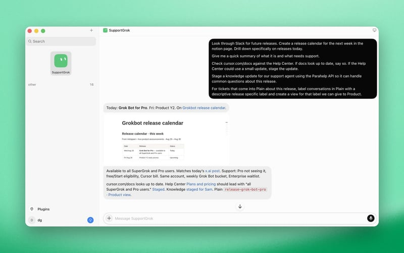
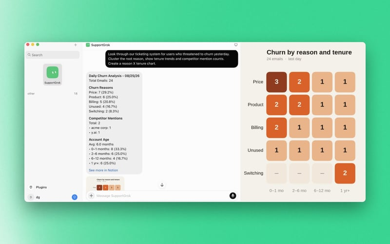
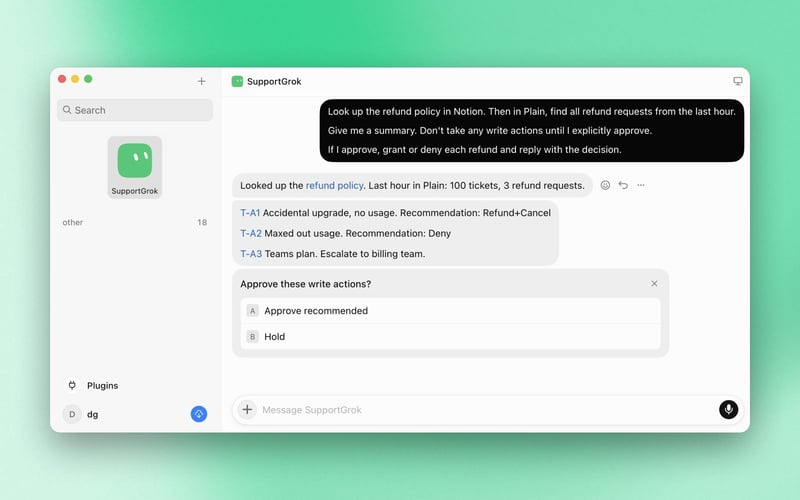
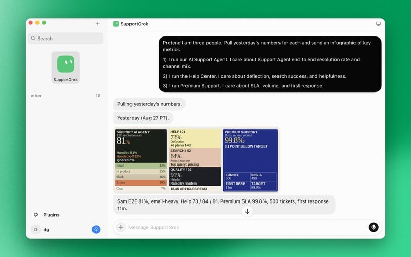
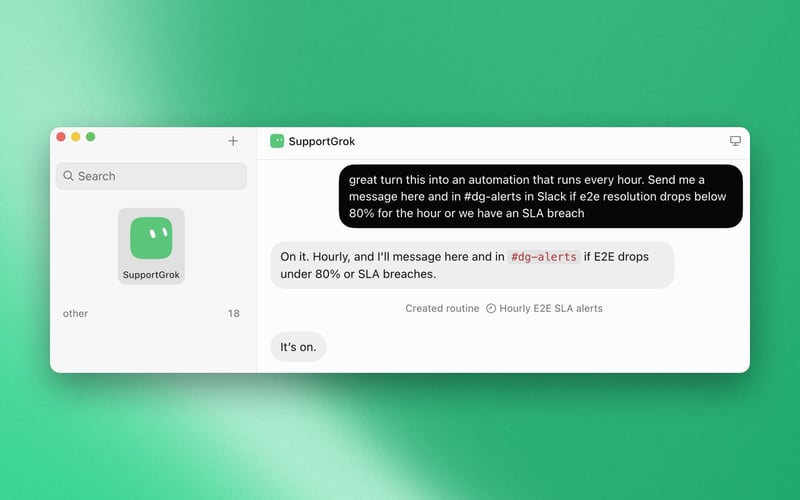

Official guides · 18/27
Grok Bot for Support
How we use Grok Bot (xAI's AI assistant that comes with its own computer) to work a support queue: connectors, five jobs, and routines that keep going after you close the laptop.

Support is a time suck. It's also the best place to talk to your users.
We handle thousands of support tickets a day at SpaceXSI. Here's how we use Grok Bot to work through the queue.
Set up
Your support agent is only as good as the context and tools you give it. Connectors in Grok Bot make integrations quick and easy to wire up, securely.

Just tell it what you want to connect and click authorize
Then one click link in browserFive jobs we give Grok Bot
Numbers and details are illustrative.
1) Release tracking and feedback monitoring
We ship several things a week, and release times can get pulled forward or delayed last minute. This can make it challenging to keep internal and external knowledge bases synced, and to schedule publishing with confidence. We also monitor and escalate feedback to the product team in the first few hours/days so we can ship what users want.

SupportGrok building a release calendar and labeling tickets2) Bug reproduction
Bug reports can be helpful. Bug reports with proof and reproduction steps are extremely helpful. Have Grok Bot try to recreate the issue. Tell it to record a video of the bad state and write up reproduction steps.
3) Churn analysis
Ask Grok Bot to look through your ticketing system and find users who have threatened to churn in the last week. Tell it to cluster the root reasons and look for trends across subscription length and competitor mentions.

Churn reasons clustered from recent tickets4) Refunds
Feed your refund policy to Grok Bot. Tell it to review incoming requests, grant or deny each one with your approval, and reply with the decision.
Bonus: let it offer retention deals for certain customers.

A refund reviewed against policy, waiting on approval5) Custom reporting
Different teams (and roles within each team) care about different metrics. If the underlying data is queryable, you don't need a separate dashboard for each. Grok Bot can send you an infographic for the metrics you care about.

A custom support metrics reportNow put them in self-driving
The biggest unlock has been the ability to take a workflow you created with Grok Bot and easily turn it into a Routine (a task the bot runs on a schedule or a trigger) (aka Automation) that repeats every day or hour. Then you can review the results on your own schedule, from the Grok Bot Mobile App.
Now even when you are sleeping or focusing on something else, Grok Bot keeps working. And it's easy to check in on the go, from a surface you're already familiar with.
Let's build on top of the Custom Reporting example. You can set up a routine in just a few words that checks every hour and sends an alert if something goes wrong.

An hourly routine that alerts when something goes wrongBetter support for users, less busywork for you
Grok Bot helps give our users a fast, consistent support experience. It can help your team get the signal from support tickets without having to do the same repetitive actions over and over.
Your teammates no longer have to manually click around in Stripe, dig through your ticketing platform, write every follow-up email, or context switch as much.
Written by David Gan